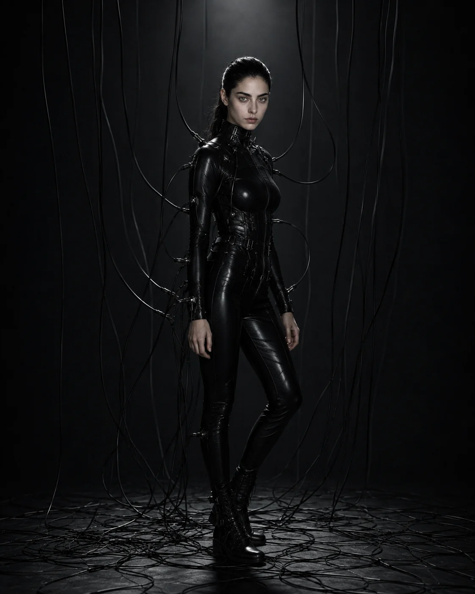
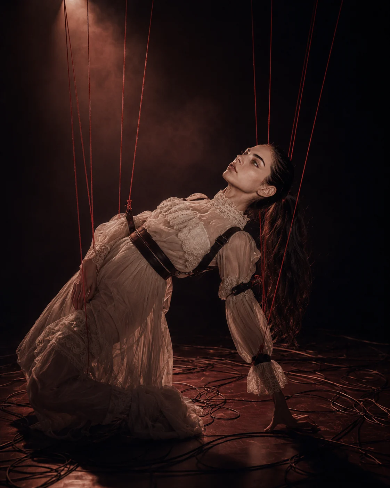

AMORFA
AMORFA é um projeto musical brasileiro criado e dirigido por R. J. Wolf, construído entre escrita, composição, direção visual e produção assistida por ferramentas generativas.
O projeto nasceu de textos privados, poemas e registros acumulados ao longo de anos. Quando novas ferramentas tornaram possível testar vozes, arranjos e estruturas em escala, esse arquivo começou a adquirir forma sonora.
AMORFA funciona como identidade artística, não como biografia literal. A figura feminina, a voz e o universo visual têm autonomia própria; R. J. Wolf permanece como o nome que assina e dirige a obra. A distância entre essas duas instâncias não é um truque de mistério, mas parte do modo como experiências reais são transformadas antes de chegar às músicas.
O catálogo muda de linguagem entre discos — eletrônico, pós-punk, art-pop, guitarras, ruído, intimidade — sem tratar variedade como ausência de critério. A unidade está menos num gênero fixo do que na atenção ao corpo, à tecnologia, à repetição, ao desejo e às formas de percepção.


“Uma experiência virar obra não entrega automaticamente o resto da minha vida junto com ela.”